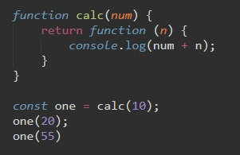
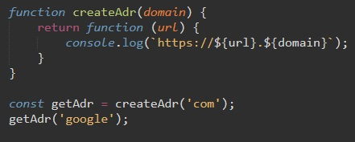
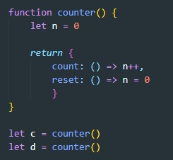

Рассмотрим следующий пример
Мы создали функцию которая возвращает функцию. Возвращаемая функция выводит в консоль сумму двух чисел. Первое число принимает родительская функция, второе число дочерняя функция.
Как мы можем обратиться к дочерней функции, ведь она замкнута? мы можем объявить переменную и в нее поместить результат функции родительской, т.е. наша новая переменная будет функцией
Так мы создали переменную one и внее поместили результат функции calc с входным параметром - 10
Т.е. в переменной one замкнуто значение 10 для родительской функции
Теперь мы можем вызвать нашу новую функцию one с новый входящим параметром, и будем получать в консоли сумму 10-ти и того числа которое дадим входящим параметром для one
Рассмотрим еще один пример замыкания
Мы так же создали функцию которая возвращает дочернюю функцию.
Логика абсолютно такая же. Создали переменную и поместили в нее значение выходного параметра родительской функции, т.е. дочернюю функцию. И теперь вызываем нашу переменную как функцию и задаем ей на вход параметры.
По сути замыкание нужно для создания локальных переменных, которые не будут доступны из внешнего скоупа (scope). Вложенные функции будут обладать исключительным правом доступа к таким переменным.
Рассмотрим пример:
Функция counter() возвращает объект с двумя методами:
Мы поместили в переменные c и d экземпляры объекта возвращенного функцией counter
Каждый вызов функции counter создает новую цепочку областей видимости и новую скрытую переменную. Вызов метода count или reset одного объекта не влияет на другой.